Integration Scenario 1 – Connect your applications
Overview

Cassie is a rising star in the marketing department. She is always looking for new digital tools to engage with customers, and has recently started using a SaaS service called Mailchimp to revolutionise email marketing within Paradise Audiophiles. However, she is frustrated with how much time she spends sifting through responses, and reconciling them with their Salesforce CRM system.
Log into IBM App Connect
-
Launch the Chrome browser.
-
In your browser, go to https://designer.appconnect.ibmcloud.com/ and sign in with the ibmappconnect0XX@gmail.com IBMid account you have been given.
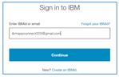
Create or update your mailing list in Mailchimp
Let us set up a new e-mail marketing campaign in Mailchimp.
- Log into https://www.mailchimp.com with the credentials supplied:
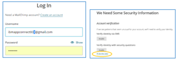Important: If prompted for verification, click I’ll do this later… If that is not an option, verify using security questions, and the answer to any question about a city is Armonk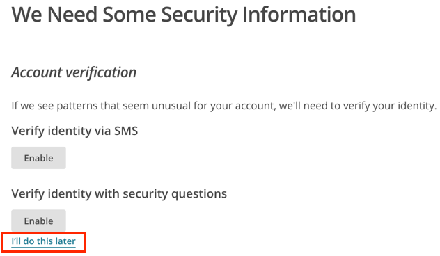
-
Click on Lists:
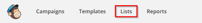 -
If there is a list called “Audiophiles”, then click it and select all existing subscribers and delete them:
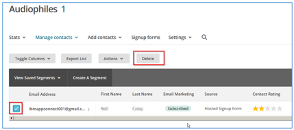 -
If the list does not exist, create it with following information:
Field Value List Name Audiophiles Default from name ibmappconnect0XX@gmail.com Default from name App Connect Reminder You subscribed ad an Audiophile using the online form After you have saved the list, then go Settings -> List fields and …, and then add fields and configure as shown below:
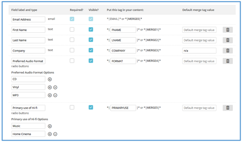
Create a Flow in IBM App Connect
- Return to IBM App Connect in your browser and if there are any flows on the dashboard written by a previous attendee, then you may stop and delete them if you wish.
-
Then, from the dashboard, click New to create a new event-driven flow:
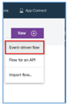 -
You should see the following screen where you need to choose and configure the event that should trigger this flow:
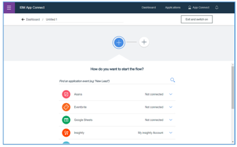 -
Select Mailchimp as the application and “New Subscriber” as the event:
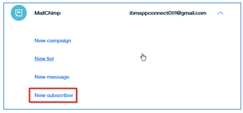 -
If prompted, click “Connect to Mailchimp” and authorize IBM App Connect using the credentials supplied:
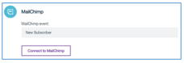
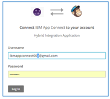 - Select the “Audiophiles” list:
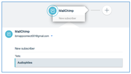
Configure the Flow to create Salesforce Leads
You now need to modify the flow to add each subscriber as a sales Lead in Salesforce.
-
Click the plus to add an action to the flow, and select Salesforce as the application, and “Create Lead” as the action:
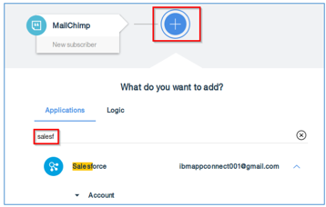 -
Scroll down the list of Salesforce entities to find the Leads, then click Create Lead:
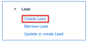 -
If prompted click “Connect to Salesforce” and log into salesforce using the details supplied:
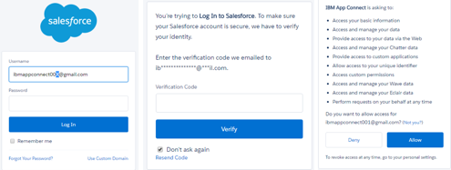
- Configure the “Create Lead” action with fields from your list in Mailchimp. To do this, start typing, or click the fields symbol to display the available fields:
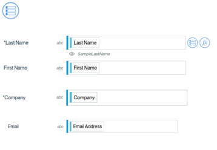
Switch on your completed Flow
Flows need to be explicitly “switched on” to start them. From the flow designer, type in a meaningful name for the flow press the “Exit and switch on” button:
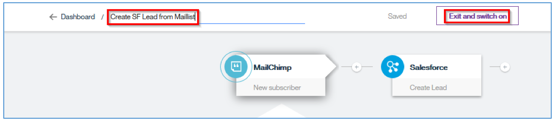
You will see that a tile appears on the dashboard indicating the flow is now running:
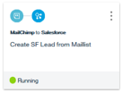
You are now ready to test your flow.
Let’s try it out!
If we generate the event in the source application we should be able to observe the effects in the target application:
-
Generate the subscription by acting like a potential prospect who is signing up online. To do this, we need to get the URL for the signup subscription form. So, either go back to mailchimp in your browser or log back into https://www.mailchimp.com
-
Select “Lists”, then “Audiophiles”, then “Signup forms”, then “General forms”. You should see a form as below, with a “Signup form URL”:
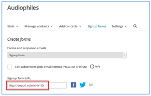 -
Open the the “Signup form URL” in a new browser window, and fill in some details including the ibmappconnect0XX@gmail.com e-mail address you have been using as a login during the lab:
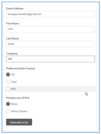 -
Once you click “Subscribe to list” you will need to do a Captcha verification:
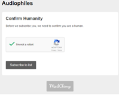 -
You may need to log into https://gmail.com as your ibmappconnect0XX user and click the confirmation e-mail. If you do not receive this emai, continue to the next step.
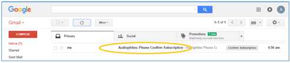Important: If prompted for verification, choose Confirm your recovery email, then enter ibmappconnect000@yahoo.com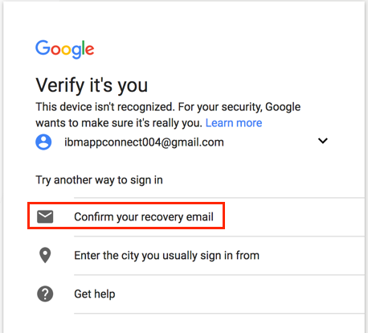 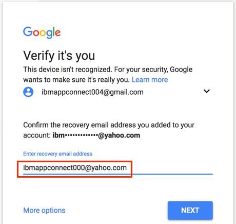
-
We want to see the result in Salesforce. Open a browser tab and log into Salesforce at https://login.salesforce.com
If prompted to register your mobile phone, click I’ll do it later. -
Click on the Leads tab and find the new lead:
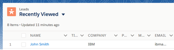Open the Lead and check that the fields are set as expected.
If your Salesforce dashboard does not look like the above, then go to the App Launcher in the top left and then navigate to the Leads:
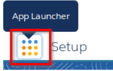
Thank You!
In this Lab you’ve seen how IBM App Connect provides features for simple, guided app-to-app integration. With IBM App Connect you can link your applications so that when something happens in one application, other relevant applications get updated automatically, so you can:
- Stop wasting time on repetitive manual tasks
- Use this intuitive business tool to take back control
- Link your apps in a few simple steps
Want to learn more?
If you didn’t complete the lab exercises or want to go further, then why not sign up for a free trial? Go to https://designer.appconnect.ibmcloud.com/newAccount and complete the registration.
Do you want to keep up to date or influence the product?
IBM App Connect is a rapidly evolving service in IBM Cloud. If you have been interested by what you’ve explored in the product today, then please sign up to our sponsored user program. The program provides the opportunity for you to influence how we extend and enhance the product to meet the needs of our customers.
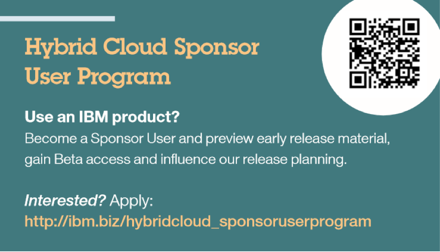